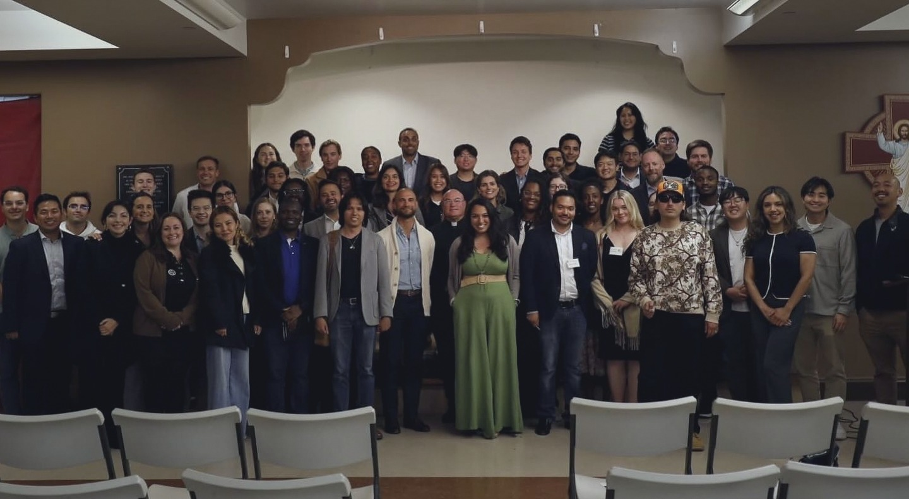
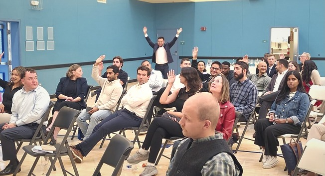
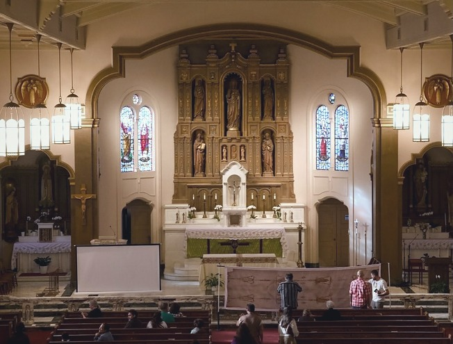
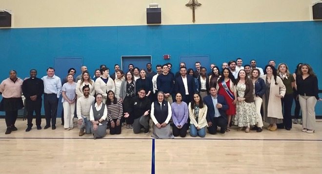

01
Called to Lead
St Philip the Apostle, 725 Diamond St
Ryan Mayer, Archdiocese of San Francisco

A monthly evening on Catholic social teaching, formed with the Archdiocese of San Francisco.
A speaker who does that work for a living.
July 7, 2026 St James

Sep 1
The Eucharistic necessity of your royal priesthood.
01
St Philip the Apostle, 725 Diamond St
Ryan Mayer, Archdiocese of San Francisco

02
St James, Dolores Heights
Molly C. Sheahan, California Catholic Conference

03
St Paul, 221 Valley St
Sr. Marilú Ibarra FdCC, St. Anthony Foundation

July 30, 2026 St Monica
04
Who is the man of the Shroud?
St Monica, 470 24th Ave
Presented by Othonia
With the Missionaries of Charity.
August 3, 2026 San Francisco

August 3, 2026 San Francisco

August 5, 2026 St Paul

August 5, 2026 St Paul
July 7, 2026 St James

July 30, 2026 St Monica
6:30
Check-in. Wine and bites.
7:00
Keynote, panel, questions.
9:00
The reception.
9:30
The evening ends.

August 5, 2026 St Paul
Founded June 2026 by Saul Perez, Jessica Glennon, Daniel Ramirez and Jerry Sharp III. Chaplain: Fr. Tom Martin.
“…a lot of young adults are on fire for their faith, but there’s a disconnect.”
Catherine Dombrowski, attendee, July 7, 2026
“Kudos to the young adults who launched a monthly Catholic Social Teaching series…”
Office of Human Life & Dignity, June 5, 2026

August 5, 2026 St Paul
The last three sold out.
One message when the date is set.
Nothing in the published listings says you must be. Ask on Instagram before registering.
The lecture evenings have been free. The Shroud evening was $10. Check the Luma listing for your date.
Yes. Each evening has its own Luma listing and registration is required for entry.
Business casual. That is the only guidance the listings give.